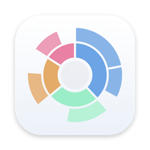

Fast scans
Scan whole disks or any folder using every core. Hard links and APFS clones are counted once, and it stays on one disk.

MacleanFree, open source, no telemetry
Maclean is a native macOS disk analyzer and cleaner. Scan a disk, explore it on an interactive map, and clear space safely.
macOS 14 or later · Apple silicon and Intel · MIT licensed
Scan whole disks or any folder using every core. Hard links and APFS clones are counted once, and it stays on one disk.
Click a segment to drill in and hover for sizes. A side list ranks the largest items, and a preview button opens a file in its own window, so you know what it is before you delete it.
Drag items to the collector. Folders shrink as you collect, so you see the space you'll get back before anything is deleted.
A 5-second countdown, a re-check right before removal, and no following swapped links or crossing disks. Or use the Trash.
Finds caches, logs, build output and leftovers of removed apps, and says why it skipped anything. Nothing goes until you confirm.
No analytics or accounts. System folders, keychains, Mail, Messages and Photos can't be deleted. Updates are signed.
Needs macOS 14 Sonoma or later, on Apple silicon or Intel.
brew tap smalhasib/macleanbrew trust smalhasib/macleanbrew install --cask macleanUpdate later with brew upgrade --cask maclean. The cask also installs the maclean-scan command.
.dmg and open it.Maclean isn't notarized by Apple, so macOS may block the first launch. Allow it once:
xattr -dr com.apple.quarantine /Applications/Maclean.appOnce it opens, Maclean installs updates itself.
git clone https://github.com/smalhasib/maclean.git && cd macleanscripts/build-app.sh && open .build/Maclean.appNeeds only the Command Line Tools (xcode-select --install). Xcode isn't required.
Maclean asks at launch until it's on. Without it, macOS hides folders like Mail and Messages and totals come out low. For folders only an administrator can open, it asks for your password once per scan.
Choose one on the start screen, or use File › Scan Folder… (⌘O).
Click a segment to go in and the centre to go back out. Hover for sizes. Use a row's eye button, right-click › Preview or Space to see a file's content (images, video, PDF, text and more) in its own window.
Drag items to the collector bar, or press ⌘⌫. You see the space you'll free before deleting.
A 5-second countdown with Cancel, then everything is re-checked and removed. Turn on Move to Trash in Settings to use the Trash.
Press ⇧⌘K to review caches, logs, build output and app leftovers. Nothing is deleted until you tick items and confirm.
★ Enjoying Maclean?
It's free and built in the open. If it saved you space, a star on GitHub helps other people find it.
Star on GitHub